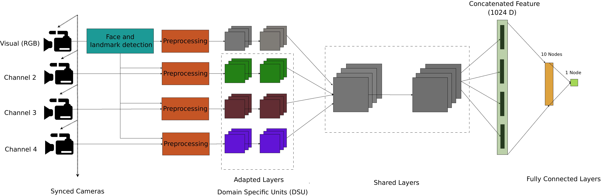
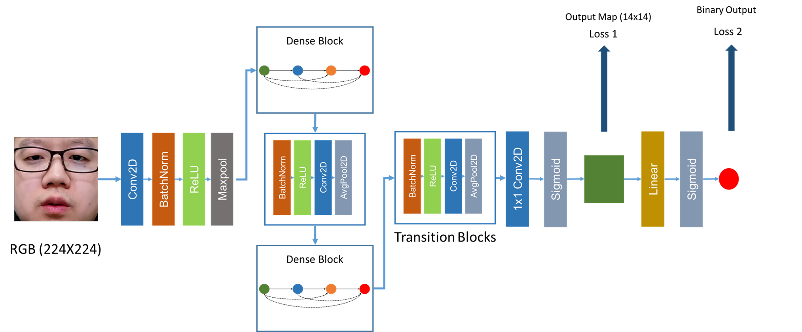
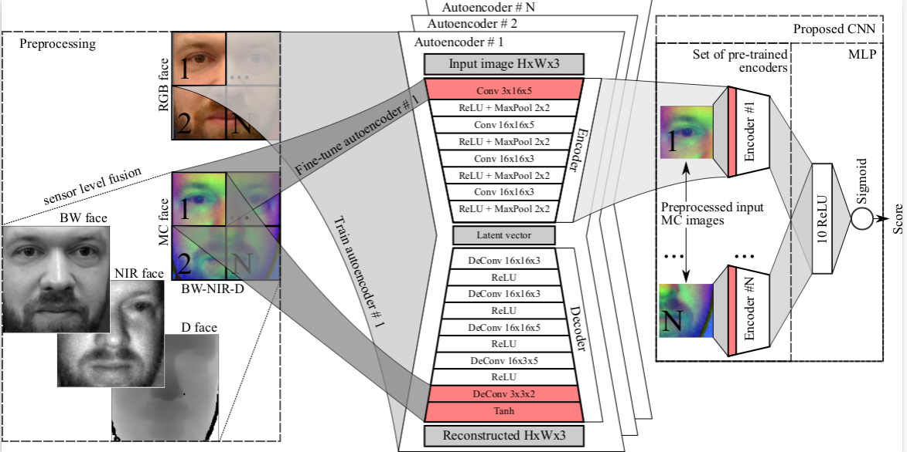
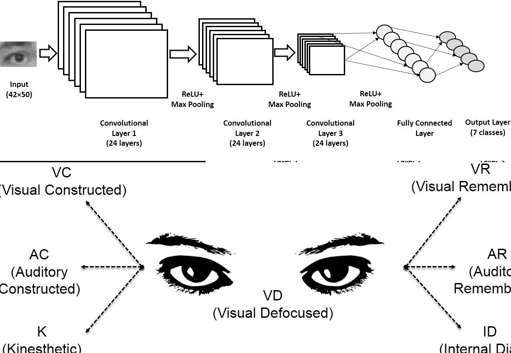
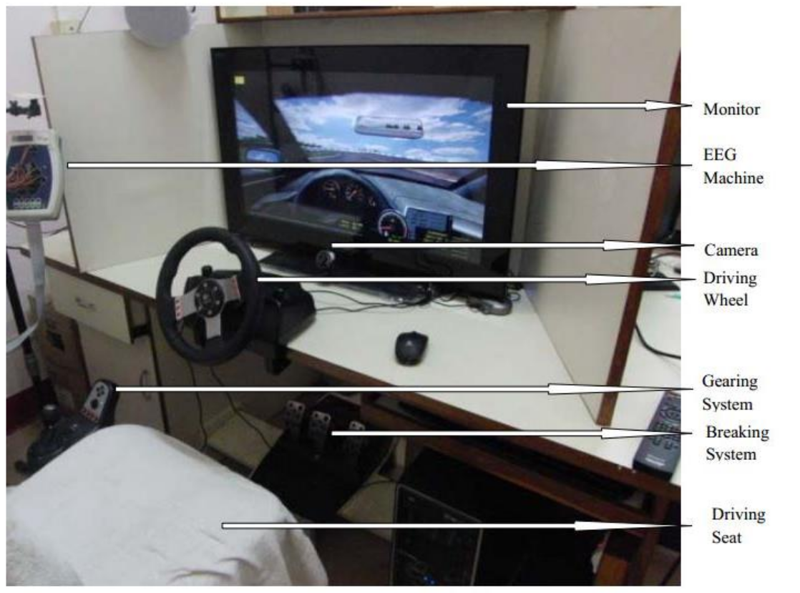
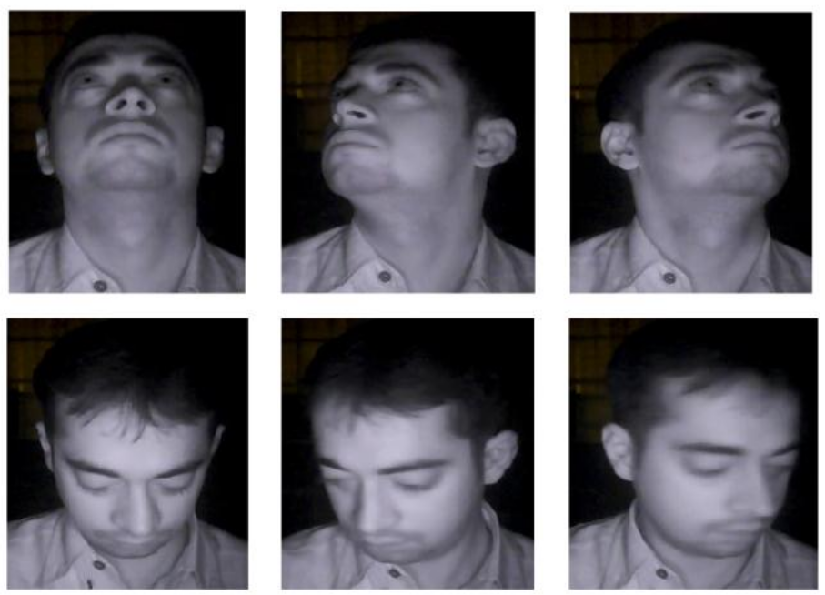

Selected Research
Highlights of major projects, algorithms, and datasets developed.

Biometric Face Presentation Attack Detection with Multi-Channel CNN
We propose a multi-channel Convolutional Neural Network based approach for presentation attack detection (PAD). We also introduce the new Wide Multi-Channel presentation Attack (WMCA) database containing a wide variety of 2D and 3D attacks across color, depth, near-infrared, and thermal channels.
Read Paper
Deep Pixel-wise Binary Supervision for Face PAD
A CNN-based framework for presentation attack detection using deep pixel-wise supervision. This approach uses only frame-level information, making it suitable for deployment on smart devices with minimal computational overhead. Achieved 0% HTER on Replay Mobile dataset.
Read Paper
Domain Adaptation in Multi-Channel Autoencoders
We explore boosting face PAD performance against challenging attacks by using multi-channel data (RGB, Depth, NIR) and a novel Autoencoder + MLP architecture. We propose a domain adaptation technique to transfer facial appearance knowledge from RGB to multi-channel domains.
Read Paper
Real-time Eye Gaze Direction Classification Using CNN
A real-time framework for classifying eye gaze direction and estimating eye accessing cues. The system detects faces, extracts eye regions using geometric landmarks, and classifies gaze using a Convolutional Neural Network. Achieves 24 fps on standard desktop hardware.
View on arXiv
Vision Based System for Monitoring Driver Attention
A robust real-time embedded platform to monitor driver loss of attention using Percentage of Eye Closure (PERCLOS). Implemented on a Single Board Computer, the system works in day and night conditions and was cross-validated using brain signals.
Read Paper
NIR Face Database for HCI Applications
Created a standard database under Near Infra-Red (NIR) illumination containing videos of 60 subjects with different head orientations, facial expressions, and occlusions. Valuable for developing algorithms for face detection, gaze tracking, and head tracking in night mode.
Download Database